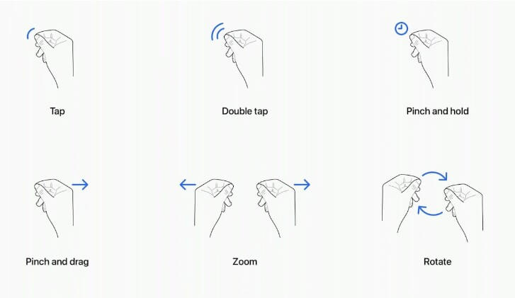

Apple Vision Pro is an augmented reality glasses: inside there are two screens for each eye, which gives the feeling space. You put them on and the interface appears around you.
Apple has announced the release of the Apple Vision Pro Developer Kits. Developers can submit application for a kit, after which they will be provided with an Apple Vision Pro headset (with a return), which will allow them to develop and test applications.
In this case, the image adapts to the environment: it takes into account the lighting, objects and colors of the environment.
Additionally, the glasses measure the movement of the eyes: to put the cursor on the button, you just need to click on it look. But there is no cursor - you look at the button and it immediately lights up. According to the first reviews, reaction to eye movement is instant*.* To "click" on the selected element, you need to close your thumb and forefinger - additional sensors track hand gestures, so there are no controllers. What's more, no need to hold hands in front of them - they can be on the table or on their knees, because the sensors are directed downwards.
There are many variations of gestures: you can pinch the page to scroll it, rotate the object in space, or put your fingers in a heart shape to send it during a video broadcast.
Some interfaces are now controlled by voice: for example, you can show a virtual keyboard, but it's easier dictate an email or ask Siri to open the desired application or immediately the desired movie.
For an immersive experience, the interface is built into the environment, and spatial audio supports this effect. In special scenarios, your room can be completely hidden, such as when watching a movie or rehearse the performance right in front of the stage.
Interfaces will have more voluminous and interactive elements. For example, you can twist your sneakers in front of purchase. Tools for quickly creating models from photogrammetry were shown last year.
Apple has made one of the most important and affordable devices. Accessibility tools built into everyone levels. For example, triple-clicking the digital crown shows a menu with accessibility settings. All items turn out to be much farther from the viewer, and now you need to point the invisible cursor at them with your eyes - This means that the size of the buttons should grow. The visual part can still occupy 44 points, but the touch area increased to 60 points bolder - this will help to better maintain contrast, especially against a blurred background, on top of which now all interfaces are built.
All together, this gives a device that maximizes the use of all sensations and our body as the main control.
Along with Vision Pro, developers will receive assistance in setting up and connecting devices, consultations with Apple experts for UI design and development advice, and assistance in the development of applications. Each developer who receives the kit will be given two additional support requests at the code level to troubleshoot code issues.
Apple states that the Apple Vision Pro Headsets are development devices owned by Apple and must remain where they are delivered, in a private, secure workspace accessible only developers who are allowed to work with them. Apple plans to maintain regular contact with developers using the kit, and the kit will need to be returned at Apple's request. Developers can apply on the Apple website. Apple will collect information about development skills each team and existing applications, with priority given to applicants who create the application, taking advantage of the features and capabilities of visionOS.